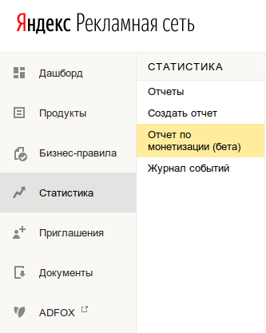
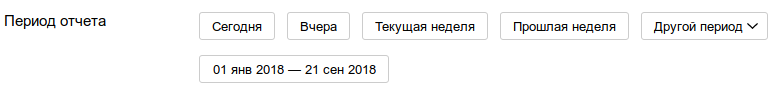
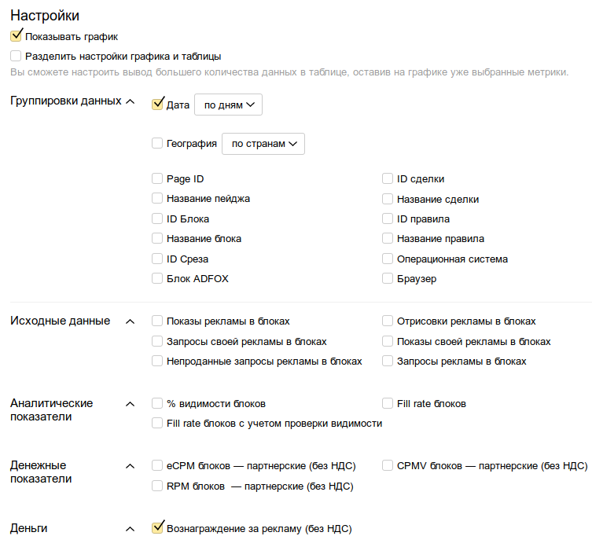
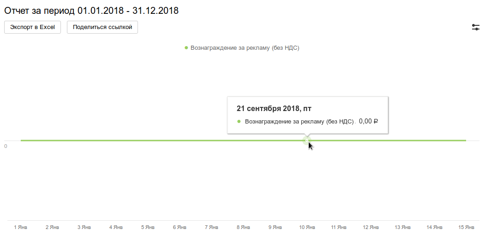
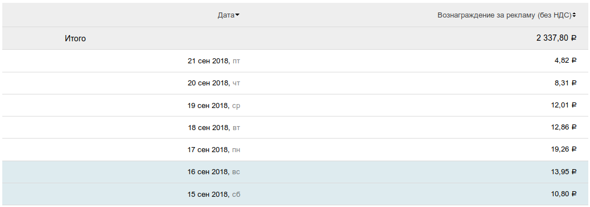
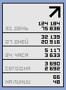

Интерфейс сервиса Яндекс Рекламная Сеть (РСЯ) очень загадочный. Лучшие юзабилити-дизайнеры упорно проектировали его так, чтобы никто ничего не понимал.
Первый вопрос, который задает себе веб-мастер, размещающий рекламу РСЯ на своем сайте, это "сколько я заработал?". Удивительно, но количества заработанных денег в РСЯ просто так увидеть невозможно. Максимум, что может узнать вебмастер - это сколько было заработано за последние сутки. А вот узнать свой баланс - это та еще задачка. Никакого готового виджета с суммой на балансе, чтобы вывесить его на дашборд, просто нет.
Как же узнать свой баланс? Придется анализировать движения по начислению и снятию средств. Если пользоваться стратегией "накопил - полностью снял", то тогда можно построить отчет от последнего момента снятия (или от начала пользования системой, если снятий небыло). Все, что начислилось с этого момента, и является суммой на балансе.
Для построения отчета, надо выбрать в меню следующие пункты: "Статистика" - "Отчет по монетизации (бета)". Блин, эта "бета" у них уже два года висит, все никак до ума довести не могут.

В открывшемся окне надо указать период отчета:

В настройках надо выделить галочкой пункт "Деньги" - "Вознаграждение за рекламу (без НДС)". Настройки будут выглядеть вот так:

После нажатия кнопки "Построить отчет", будет отображен кривой график отчета и ограниченное количество строк самого отчета.
Понять, что показывает график, не представляется возможным:

Вертикальной шкалы нет. Размерности для вертикальной шкалы тоже не показано. Можно предположить, что в рублях, но кто его знает. Внизу нарисована шкала дат. Почему-то за пол-месяца, хотя вверху написано что период целый год. При наведении мышкой на точку на графике показывается текущая дата. Что эти все графические данные значат - понять трудно.
Ниже будут отображаться числовые данные. Они отображаются более вменяемо, и сразу видна сумма. Эта сумма именно за указанный период:

Примечательно, что сумма "Итого" - это сумма за указанный в настройках отчета период. Однако ниже идет ограниченное число строк (с суммами за день), а не за весь период. Чтобы увидеть все строки, предусмотрена кнопка "Показать еще". Но так же есть кнопка "Экспорт в Excel", которая сформирует отчет в виде *.xls файла.
Видно, что заработки с РСЯ небольшие, в лучшем случае 10 - 12 рублей в день. Это значит, что в месяц зарабатывается примерно 300 - 350 рублей. А это значит, что вывести минимальную сумму в 3000 рублей можно только откручивая рекламу почти целый год. Вот так, ваш сайт должен стабильно отработать почти год, чтобы вы смогли снять деньги и пустить их на оплату, например, хостинга.
Это показатели сайта, на котором висит два блока РСЯ. Один баннер в шапке, и блок из трех баннеров после первого текстового блока на странице. Сам сайт имеет ~10 000 (десять тысяч) страниц в индексе. Его ИКС равен 300, а посещаемость следующая:

Вот такие копеюшки может зарабатывать вебмастер на рекламе РСЯ. Стоит ли овчинка выделки, если учес